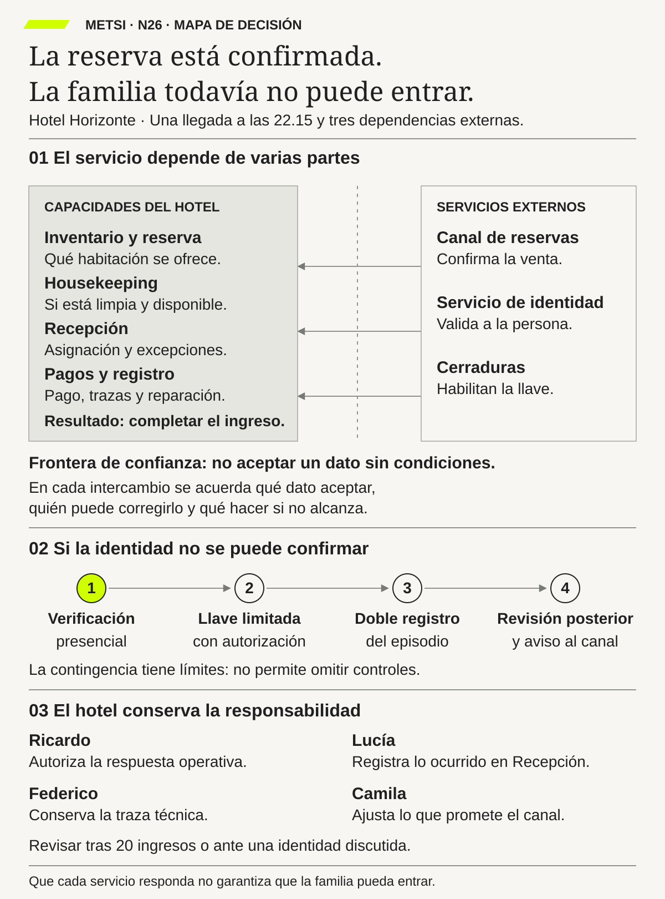

N26 · Propuesta de mapa
El hotel necesita acuerdos verificables con servicios autónomos y una contingencia autorizada para responder por el ingreso completo.
Revisión visual. Todavía no incorporado al PDF. Cuerpo mínimo previsto: 11,44 pt a 173 mm de ancho.
